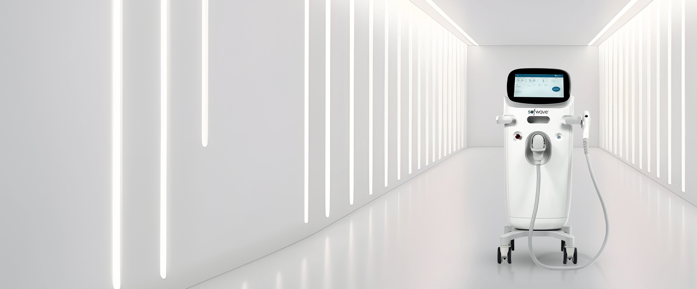
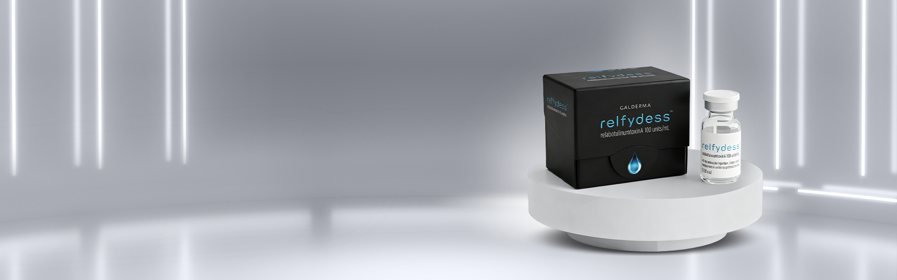

Next-generation ultrasound technology for skin tightening an…

Next generation moderate-to-severe dynamic wrinkles treatment.
Approved by the Emirates Drug Establishment (EDE)
Registration No.: 72881-1572-189267 - For medical use only.